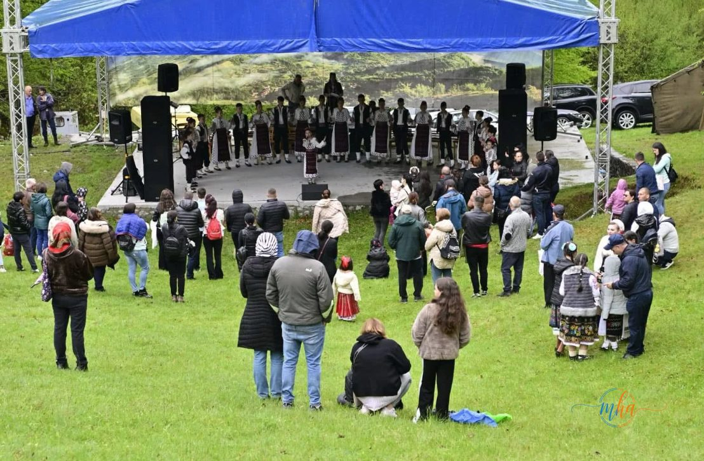

Primăvara aduce din nou Festivalul Liliacului la Ponoarele — o sărbătoare anuală care reunește mii de iubitori ai folclorului, naturii și tradițiilor mehedințene într-unul dintre cele mai pitorești locuri din județ: Pădurea de Liliac, transformată în aceste zile într-un veritabil amfiteatru natural.
Evenimentul este organizat de Primăria și Consiliul Local al comunei Ponoarele, în parteneriat cu Centrul Cultural „Nichita Stănescu" al Consiliului Județean Mehedinți, și promite două zile memorabile de spectacol, tradiție și comuniune cu natura.
🌸 Date eveniment — Festivalul Liliacului 2026
| Data | 9-10 Mai 2026 |
| Locație | Pădurea de Liliac, Comuna Ponoarele |
| Județ | Mehedinți |
| Organizatori | Primăria Ponoarele + CJ Mehedinți |
| Ansamblu muzical | Ansamblul „Doina Mehedințiului" |
| Director artistic | Tania Lăin |
| Dirijor | Prof. Marian Magheru |
| Intrare | Liberă |
Spectacol folcloric în inima naturii
Pe scena amenajată, ca în fiecare an, în inima Pădurii de Liliac din Ponoarele, transformată într-un veritabil amfiteatru natural, vor urca artiști apreciați din județul Mehedinți, alături de ansambluri folclorice cunoscute. Publicul va avea parte de momente artistice dedicate tradițiilor locale și atmosferei de serbătoare specifice zonei de munte.
Acompaniamentul muzical va fi asigurat de Ansamblul „Doina Mehedințiului" al Centrului Cultural „Nichita Stănescu", sub bagheta dirijorului prof. Marian Magheru și conducerea artistică a Taniei Lăin. Costumele populare autentice, muzica și dansul tradițional vor da viață unui spectacol de neuitat.

Scena naturală din Pădurea de Liliac de la Ponoarele — spectacol folcloric cu artiști locali și ansambluri artistice | Foto: arhivă festival
Natura, tradiția și turismul — un trio perfect la Ponoarele
Pe lângă spectacolul folcloric, vizitatorii sunt invitați să descopere și atracțiile turistice din apropiere. Printre acestea se numără celebrul Podul lui Dumnezeu, o formațiune naturală unică în România, dar și peisajele spectaculoase oferite de Geoparcul Platoul Mehedinți, o zonă protejată recunoscută pentru biodiversitatea și relieful său carstic impresionant.
Festivalul Liliacului de la Ponoarele rămâne astfel un punct de referință în calendarul cultural al regiunii, îmbinând natura, tradiția și turismul într-un eveniment dedicat comunității și vizitatorilor deopotrivă.
🎶 Ce îți oferă Festivalul Liliacului 2026
- 🌸 Scena naturală — amfiteatrul din Pădurea de Liliac în plină înflorire
- 🎭 Spectacol folcloric — artiști și ansambluri din Mehedinți
- 🎵 Ansamblul Doina Mehedințiului — muzică și dans popular autentic
- 🏛️ Podul lui Dumnezeu — formațiune naturală unică în România
- 🌿 Geoparcul Platoul Mehedinți — peisaje carstice spectaculoase
- 🍽️ Produse tradiționale — gastronomie locală și atmosferă de serbătoare
„Tradiție, cântec și parfum de liliac în inima Mehedințiului!" — motto-ul oficial al Sărbătorii Liliacului 2026, Ponoarele
Cum ajungi la Ponoarele
Comuna Ponoarele se află în nordul județului Mehedinți, la aproximativ 55 km de Drobeta-Turnu Severin, pe drumul spre Baia de Aramă. Zona este accesibilă cu mașina, iar în zilele festivalului se recomandă sosirea din timp pentru a găsi loc de parcare. Intrarea la eveniment este liberă.